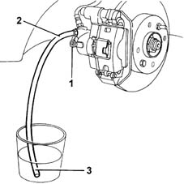
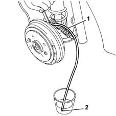

3330A20 HYDRAULIC BRAKING SYSTEM - Change. fluid - Includes. washing pipes and bleeding air
- Path
- Procedures > 33 BRAKING SYSTEM > 3330 HYDRAULIC BRAKING SYSTEM > 3330A hydraulic brake system tests and checks > 3330A20 HYDRAULIC BRAKING SYSTEM - Change. fluid - Includes. washing pipes and bleeding air
- Kind
- repair procedure (removal / refitting; the operation number is the code)
- Applies to
- all engines; all production periods
- Interactive page
- https://sloeber94.github.io/elrnDB-fMltpl/en/#/2891604
Applies to: all engines; all production periods
Carry out op. 4450B12 front or rear wheels (two) - r+r
Carry out op. 4450B13 rear wheels(2) r r
Undo the brake fluid reservoir cap and, using a syringe, remove the fluid it contains.
1. Remove the protective cap for the bleed screw for one of the front brake calipers.
2. Fit a transparent plastic pipe on the bleed screw.
3. Insert the other end of the pipe in a container of brake fluid.

Applies to: all engines; all production periods
Undo the bleed screw for the front brake caliper.
Lower the brake pedal to the end of travel position.
Tighten the bleed screw when the brake fluid pipe has been drained.
Carry out the same operation on both front calipers.
Remove the protective cap from the bleed screw for one of the rear drum brake cylinders.l
1. Fit a transparent plastic pipe on the bleed screw.
2. Insert the other end of the pipe in a container of brake fluid.

Applies to: all engines; all production periods
Loosen the rear brake cylinder bleed screw.
Lower the brake pedal to the end of travel position.
Tighten the bleed screw when the brake fluid pipe has been drained.
Carry out the same operation for both rear drum brake cylinders.
Proceed with washing the braking system pipes.
Refill the braking system from the reservoir.
Fit a transparent pipe on the bleed screw for one of the front brake calipers.
Inser the other end of the pipe in a container of brake fluid.
Undo the bleed screw.
Wait until the air in the hydraulic circuit has all come out.
Tighten the bleed screw when the brake fluid comes out.
Fit a transparent pipe on the bleed screw for one of the rear drum brake cylinders.
Insert the other end of the pipe in a container of brake fluid.
Loosen the bleed screw.
Wait until the air in the hydraulic circuit has all come out.
Tighten the bleed screw when the brake fluid comes out.
Refill the brake fluid reservoir, as necessary.
Complete with op. 3330A14 HYDRAULIC BRAKING SYSTEM - Bleed air
Complete with op. 3330A10 BRAKE FLUID - Check level and top up, if necessary.
Complete with op. 4450B12 front or rear wheels (two) - r+r
Complete with op. 4450B13 rear wheels(2) r r
Topics linked from this page (4)
- 3330A10 BRAKE FLUID - Check level and top up, if necessary.
- 3330A14 HYDRAULIC BRAKING SYSTEM - Bleed air
- 4450B12 front or rear wheels (two) - r+r
- 4450B13 rear wheels(2) r r
Topics that link to this page (7)
- 0010K60 60,000km service coupon - emission control versions
- 0010K61 60000 service coupon, emission control version
- 0010M20 120,000km service coupon, emission control versions
- 0010M21 120000 km service coupon for emission control versions with air conditioner
- 0010M80 180,000km service coupon - emission control versions
- 0010M81 180000 km service coupon foe emission control versions with air conditioner
- 0010T60 BRAKE FLUID - Change.